| Parameter | Coefficient | SE | 95% CI | t(51) | p |
|---|---|---|---|---|---|
| (Intercept) | 18.82 | 2.93 | (12.94, 24.69) | 6.43 | < .001 |
| dragons | 1.38 | 0.53 | (0.31, 2.44) | 2.59 | 0.013 |
The Beast of Bias
Professor Andy Field
University of Sussex


|
All is not well in the island of linearis modelus.
For years, humans and dragons have lived in harmony, until recently.
The rulers of the 134 kingdoms want the island for themselves.
Through a campaign of propaganda, they have convinced their subjects
that the dragons should be banished.
They have sent their best knights to slay the dragons.
Only Melvin, a wise wizzard of statistics, can save them.
He meets with the commander in chief of the knights of the 134 kingdoms.

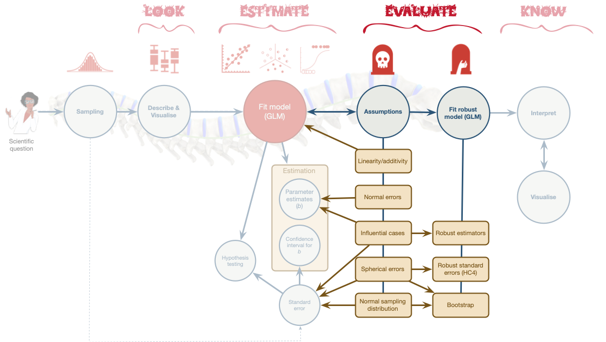
Part 1: Outliers and do dragons eat sheep?
“Coz they eat all our sheep”
Sir Knight Zach, Defender of the world of Military
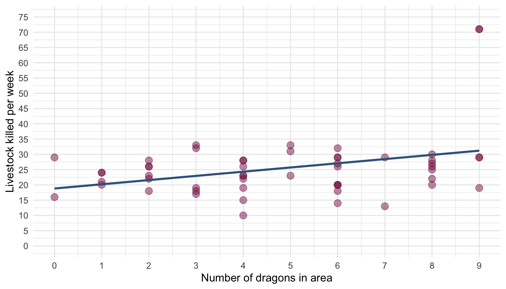
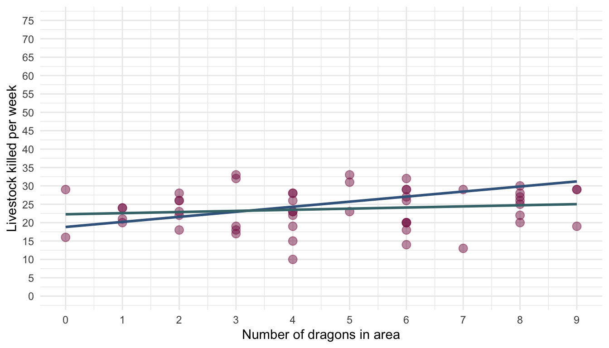
Detecting outliers
- Graphs
- Scatterplots (less helpful with several predictors)
- Histograms
- Standardized residual
- In an average sample, 95% of standardized residuals should lie between \(\pm 2\)
- 99% of standardized residuals should lie between \(\pm 2.5\)
- Any case for which the absolute value of the standardized residual is 3 or more, is likely to be an outlier
Detecting influential cases
DF Beta
- The change in b when a case is removed
- Be wary of standardized values with absolute values > 1
Full sample
Influential cases removed
| Parameter | Coefficient | SE | 95% CI | t(49) | p |
|---|---|---|---|---|---|
| (Intercept) | 22.27 | 1.64 | (18.98, 25.56) | 13.60 | < .001 |
| dragons | 0.31 | 0.31 | (-0.31, 0.93) | 0.99 | 0.325 |
Detecting influential cases
Cook’s distance
- Measures the influence of a single case on the model as a whole
- Absolute values greater than 1 are cause for concern (Cook & Weisberg , 1982), but check any > 0.5.
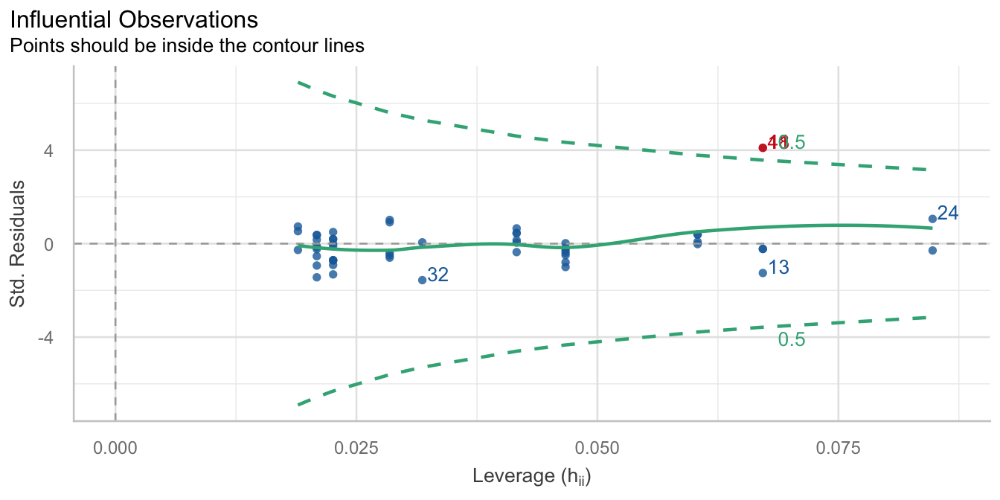
Robust estimation
Normal model (OLS)
| Parameter | Coefficient | SE | 95% CI | t(51) | p |
|---|---|---|---|---|---|
| (Intercept) | 18.82 | 2.93 | (12.94, 24.69) | 6.43 | < .001 |
| dragons | 1.38 | 0.53 | (0.31, 2.44) | 2.59 | 0.013 |
Part 2: Linearity, spherical errors and do dragons kidnap royalty?
“Coz they kidnap the princesses”
Sir Knight Zach, Defender of the world of Military
Are more princesses kidnapped in areas with more dragons?
\[\hat{\text{royalty}}_i = 3.98 + 0.12\text{dragons}_{i}\]
| Parameter | Coefficient | SE | 95% CI | t(128) | p |
|---|---|---|---|---|---|
| (Intercept) | 3.98 | 0.30 | (3.39, 4.57) | 13.32 | < .001 |
| dragons | 0.12 | 0.06 | (5.30e-03, 0.23) | 2.07 | 0.040 |
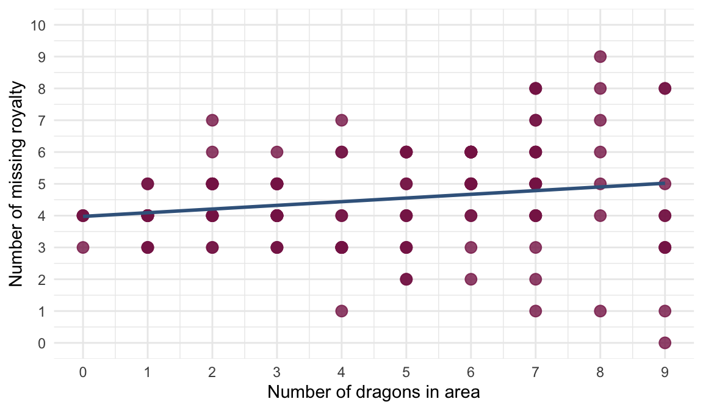
Are more princesses kidnapped in areas that have dragons?
\[\hat{\text{royalty}}_i = 4.26 + 1.21\text{dragons}_{i}\]
| Parameter | Coefficient | SE | 95% CI | t(87) | p |
|---|---|---|---|---|---|
| (Intercept) | 4.26 | 0.41 | (3.43, 5.08) | 10.28 | < .001 |
| dragons (Dragons) | 1.21 | 0.53 | (0.15, 2.26) | 2.27 | 0.026 |
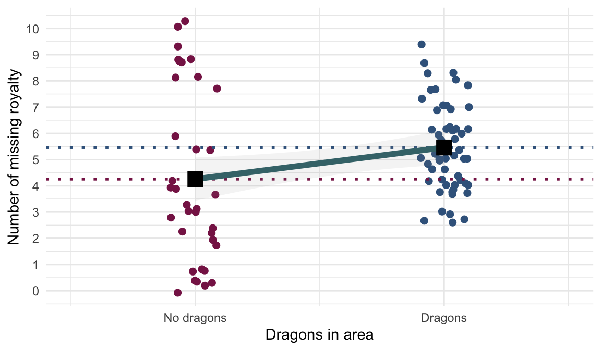
Key assumptions of the General Linear Model
Linearity and additivity
Spherical errors
The population model should have:
- Homoscedastic errors
- Inspect the model residuals
- Independent errors
- Inspect the model residuals
Normality of something-or-other
- Population model errors
- Sampling distribution
Linearity and additivity
The relationship between predictor(s) and outcome is, in reality, linear
\[\text{royalty}_i = \hat{b}_0 + \hat{b}_1\text{dragons}_{i} + e_i\]
The combined effect of predictors is additive
\[\text{royalty}_i = \hat{b}_0 + \hat{b}_1\text{dragons}_{i} + \hat{b}_2\text{strict regime}_{i} + e_i\]
Statis-tip
- Test linearity using plots. If the data cloud looks banana shaped (curved), linearity probably can’t be assumed.
Errors vs. Residuals
Statis-tip
- A model’s ERRORs refer to the differences between predicted values and observed values of the outcome variable in the population model
- These values cannot be observed
Statis-tip
- A model’s RESIDUALs refer to the differences between predicted values and observed values of the outcome variable in the sample model
- These values can be observed and are representative of the population model errors.

Normally distributed errors
\[ \begin{aligned} \text{Ringing}_i &= \hat{b}_0 + \hat{b}_1\text{Volume}_i + \varepsilon_i \\ \varepsilon_i &\sim N(0, \sigma^2) \end{aligned} \]
Errors (Population model)
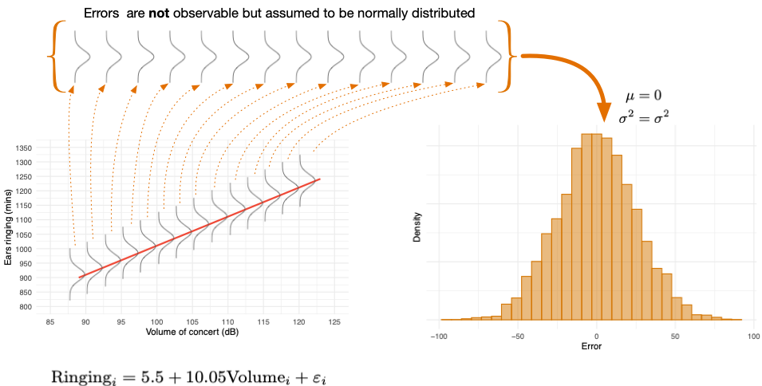
Residuals (are observable)
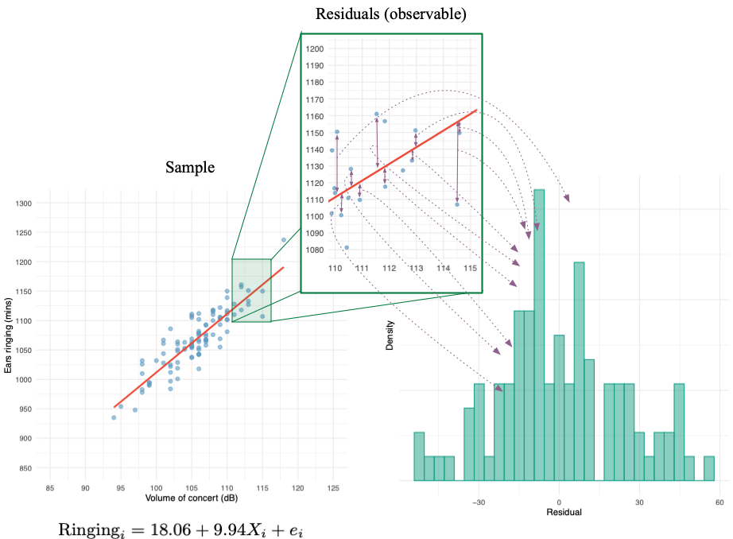
Spherical errors
Errors should be independent
- The population error in prediction for one case should not be related to the error in prediction for another case (autocorrelation).
- Independent observations tend to lead to independent errors
- Because we cannot observe population errors we inspect the sample residuals
Errors should be homoscedastic
- Variance of population errors (residuals) should be consistent at different values of the predictor variable
- Because we cannot observe population errors we inspect the sample residuals
Violation of the assumption
- bs are unbiased but not optimal
- Standard error is incorrect
- Therefore, t-tests, p-values and confidence intervals will also be incorrect
Residuals vs. Predicted values

Residuals vs. Predicted values
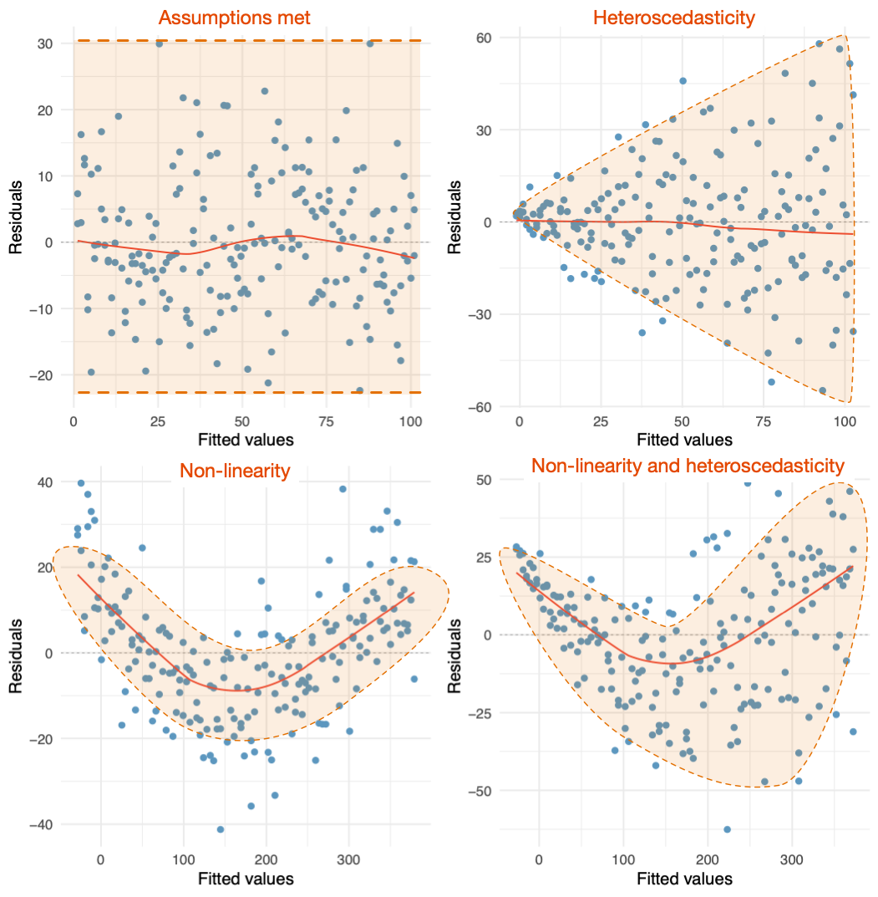
Homoscedastic
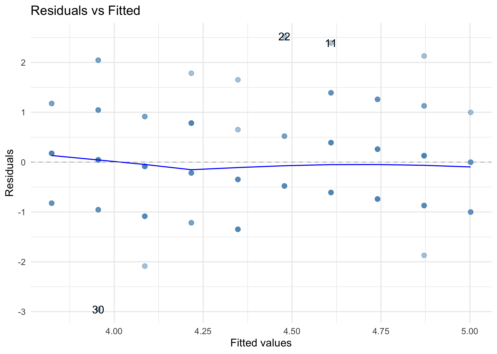
Our data

Homoscedastic

Our data: Heteroscedastic

Homoscedastic
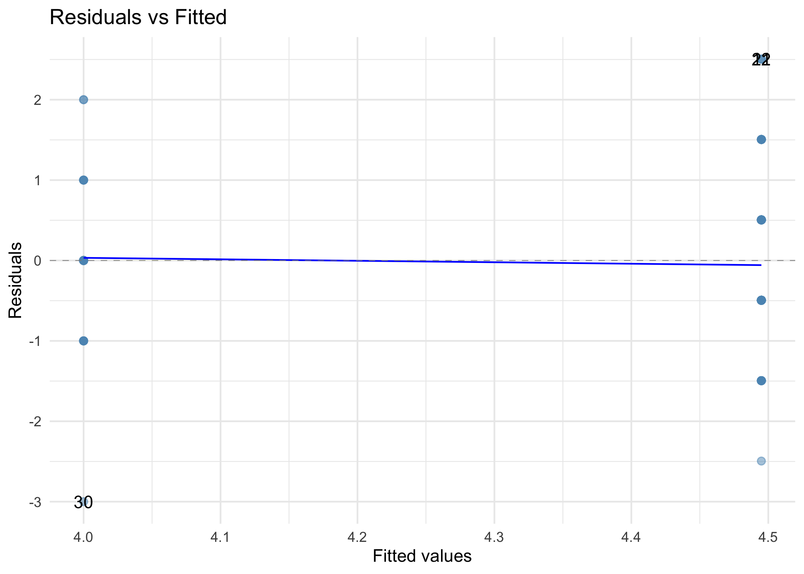
Our data
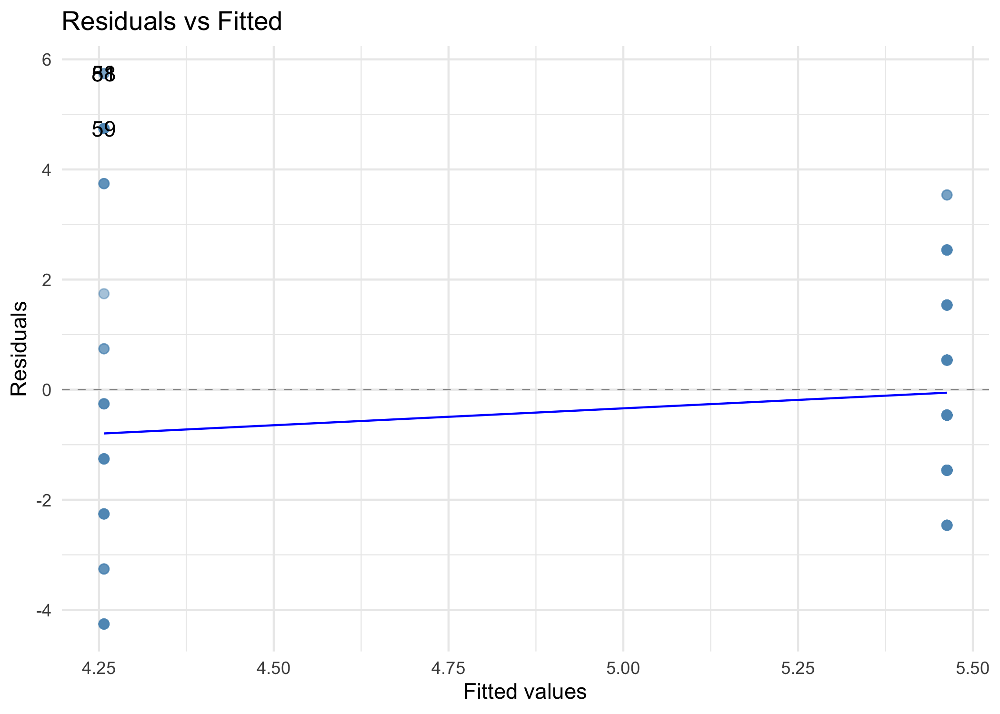
Homoscedastic
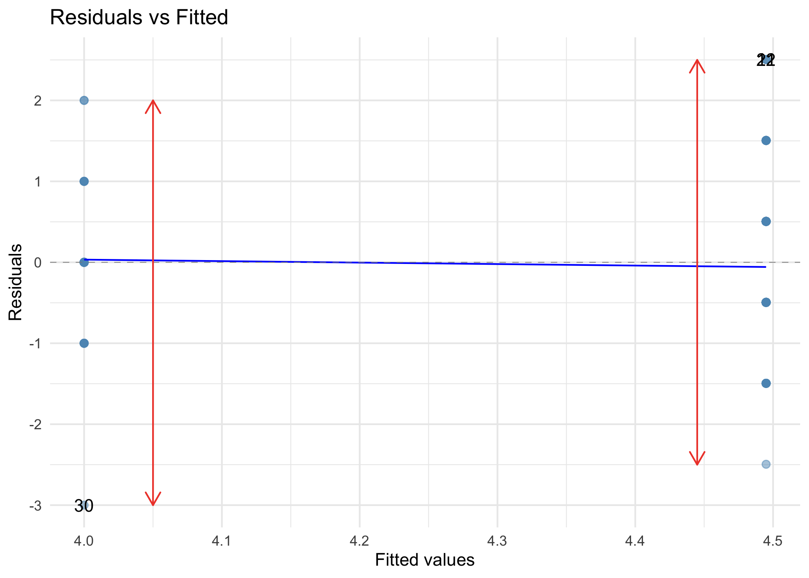
Our data: Heteroscedastic

Levene’s Test
The danger zone!
- You might hear about it but don’t use it: think about what we know about sample sizes and significance.
- For the avoidance of doubt, don’t use it.
- One more time … don’t use it
Part 3: Normality and does dragons poo kill crops?
“Coz their dung doesn’t help our crops to grow”
Sir Knight Zach, Defender of the world of Military
Is dung associated with crop yield?
\[\hat{\text{yield}}_i = 14.34 + 2.02\text{poop}_{i}\]
| term | estimate | std.error | statistic | p.value | conf.low | conf.high |
|---|---|---|---|---|---|---|
| (Intercept) | 14.34 | 6.77 | 2.12 | 0.04 | 0.56 | 28.12 |
| poop | 2.02 | 1.37 | 1.48 | 0.15 | -0.77 | 4.82 |
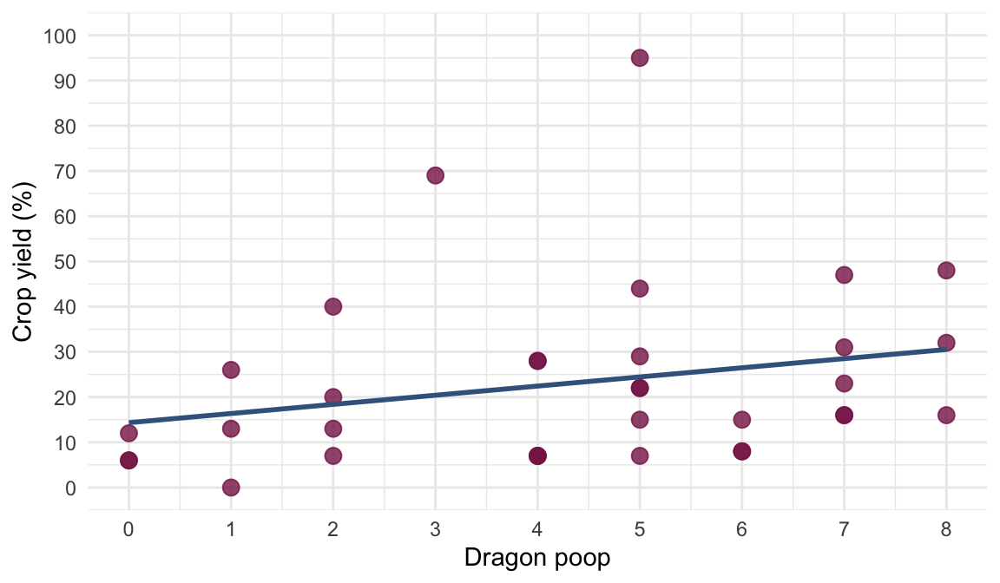
Normally distributed errors
The danger zone!
People usually (falsely) think the data or population need to be normally distributed.
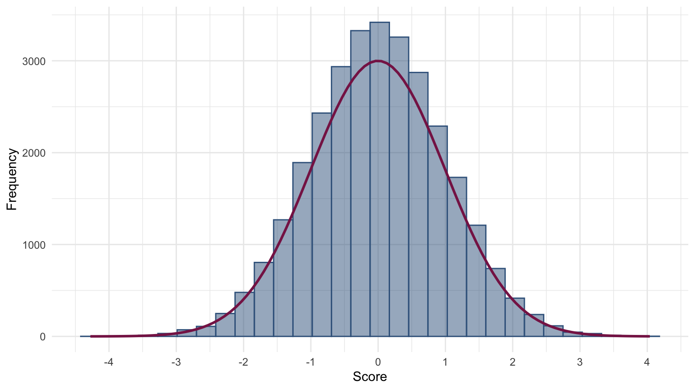
Normally distributed errors
Estimation
- Normal errors don’t really matter
- When errors are not normally distributed, b will be unbiased and optimal (i.e., will minimize the variance), but there may be classes of estimator (other than OLS) that are more accurate (Wilcox, 2010)
Confidence intervals and significance tests
- When residuals are normal
- It can be shown that the bs have a normal sampling distribution.
- Test statistics of bs (usually testing the null of b = 0) follow a t-distribution.
- If they are not normal then
- We can’t base confidence intervals on the properties of the normal distribution.
- We don’t know what distribution tests statistics have.
The Central Limit Theorem (CLT)
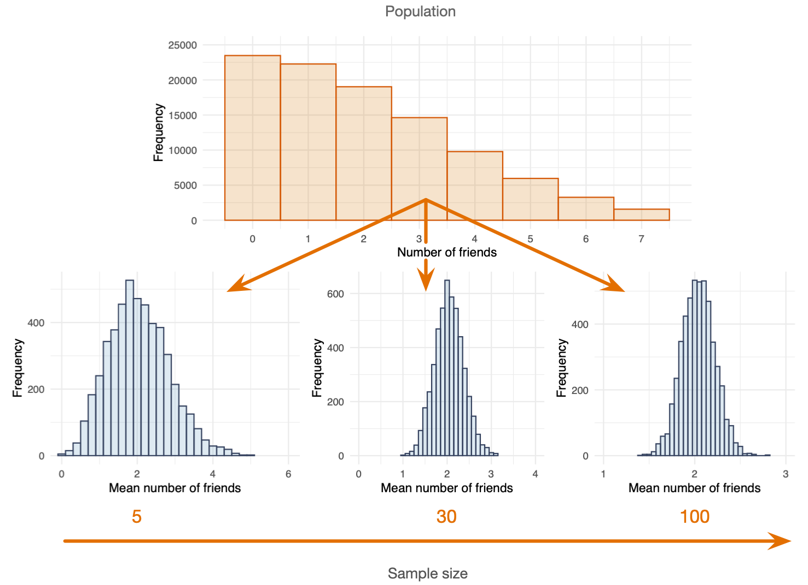
Exploring normality of model errors
- Check the distribution of the model residuals using a P-P/Q-Q plot
Large samples
- You don’t need to worry about this assumption in large samples because of the CLT
Small samples
- Use a bootstrap to get an empirical confidence interval and standard error (more on this later …)
The K-S Test
The danger zone!
- You might hear about it but don’t use it: think about what we know about sample sizes and significance.
- For the avoidance of doubt, don’t use it.
- One more time … don’t use it
Normal residuals

Our residuals: Non-normal
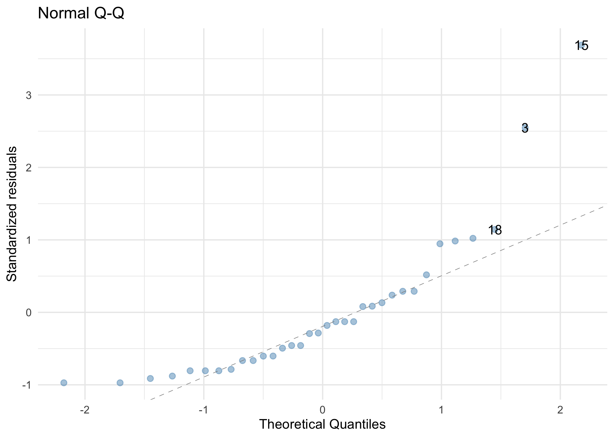
Part 4: Correcting problems
Robust procedures

Robust procedures
The bootstrap
- Standard errors are derived empirically using a resampling technique
- Results in robust confidence intervals and p-values
- Designed for small samples (when normality matters)
Heteroskedasticity-consistent standard errors
- Use a sandwich estimator
- HC3 and HC4 methods work best
The Bootstrap
| yield | 0 | 6 | 6 | 7 | 7 | 7 | 7 | 7 | 8 | 8 | 12 | 13 | 13 | 15 | 15 | 16 | 16 | 16 | 20 | 22 | 22 | 23 | 26 | 28 | 28 | 29 | 31 | 32 | 40 | 44 | 47 | 48 | 69 | 95 |
Mean = 23.03
Bootstrap sample 1:
| yield | 0 | 0 | 6 | 7 | 7 | 7 | 7 | 7 | 8 | 8 | 8 | 12 | 12 | 13 | 13 | 15 | 16 | 16 | 20 | 22 | 22 | 22 | 22 | 23 | 26 | 28 | 29 | 32 | 47 | 48 | 48 | 69 | 69 | 95 |
Mean = 23.06
Bootstrap sample 2:
| yield | 0 | 0 | 6 | 7 | 7 | 7 | 7 | 7 | 7 | 7 | 7 | 7 | 8 | 8 | 15 | 15 | 16 | 16 | 20 | 20 | 22 | 23 | 23 | 28 | 31 | 40 | 44 | 44 | 44 | 47 | 48 | 48 | 69 | 95 |
Mean = 23.32
| yield | 0 | 6 | 6 | 7 | 7 | 7 | 7 | 7 | 8 | 8 | 12 | 13 | 13 | 15 | 15 | 16 | 16 | 16 | 20 | 22 | 22 | 23 | 26 | 28 | 28 | 29 | 31 | 32 | 40 | 44 | 47 | 48 | 69 | 95 |
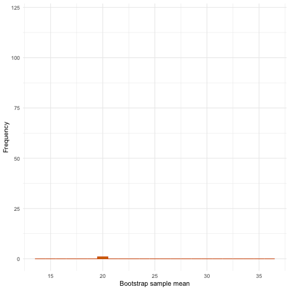
| yield | 0 | 6 | 6 | 7 | 7 | 7 | 7 | 7 | 8 | 8 | 12 | 13 | 13 | 15 | 15 | 16 | 16 | 16 | 20 | 22 | 22 | 23 | 26 | 28 | 28 | 29 | 31 | 32 | 40 | 44 | 47 | 48 | 69 | 95 |

Do dragons really kidnap royalty?
Normal model (number of dragons)
| Parameter | Coefficient | SE | 95% CI | t(128) | p |
|---|---|---|---|---|---|
| (Intercept) | 3.98 | 0.30 | (3.39, 4.57) | 13.32 | < .001 |
| dragons | 0.12 | 0.06 | (5.30e-03, 0.23) | 2.07 | 0.040 |
Do dragons really kidnap royalty?
Normal model (dragons or not)
| Parameter | Coefficient | SE | 95% CI | t(87) | p |
|---|---|---|---|---|---|
| (Intercept) | 4.26 | 0.41 | (3.43, 5.08) | 10.28 | < .001 |
| dragons (Dragons) | 1.21 | 0.53 | (0.15, 2.26) | 2.27 | 0.026 |
Robust model (dragons or not) HC4 standard errors
Does dragon poo help crops to grow?
Normal model
| Parameter | Coefficient | SE | 95% CI | t(32) | p |
|---|---|---|---|---|---|
| (Intercept) | 14.34 | 6.77 | (0.56, 28.12) | 2.12 | 0.042 |
| poop | 2.02 | 1.37 | (-0.77, 4.82) | 1.48 | 0.150 |